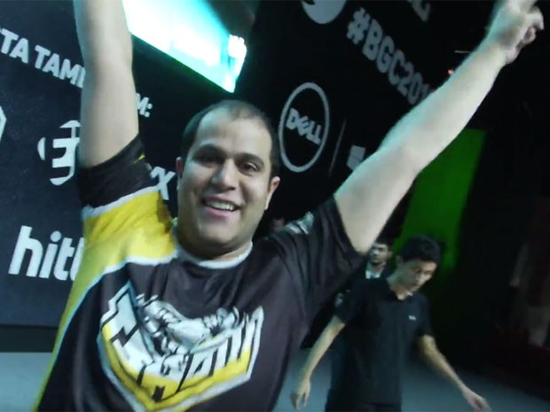

Campeão de 'Clash Royale' jogava no celular, mas teve de se adaptar a tablet
João Paulo Vinhal, de 28 anos, tomou um susto ao descobrir que teria de usar um tablet nas finais do primeiro torneio presencial de "Clash Royale" no Brasil, durante a feira Brasil Game Show (BGS) 2016. Acostumado a jogar em seu smartphone, "Mandrake", como é conhecido, tirou um coelho da cartola e superou a falta de familiaridade com o aparelho para ganhar a competição e levar R$ 7 mil para casa. "Fiquei meio nervoso porque nunca tinha jogado na tela grande. Mas parece até ser melhor por ter mais precisão", diz João Paulo em entrevista ao G1. "Graças a Deus não me atrapalhou". Mas a vitória sobre seu rival Alan Ribeiro, de Manaus (AM), por 3 jogos a 1 aconteceu sem grandes imprevistos – de sua parte, pelo menos. Problemas técnicos fizeram o primeiro combate ser reiniciado. Após vencer as duas primeiras partidas da melhor de cinco, "Mandrake" até relaxou um pouco e cedeu espaço para o adversário, mas chegou à quarta vitória com tranquilidade.
Não que seu caminho na competição tenha acontecido sem problemas. Além de ter de enfrentar um companheiro de clã na semifinal, "Mandrake" conta que participou de todas as etapas classificatórias abertas a todo o público brasileiro, mas só conseguiu a primeira colocação na terceira tentativa. Depois de conseguir a classificação, o economista passou a se dedicar mais aos treinos, chegando a jogar entre 2 e 3 horas todos os dias. Além de participar das disputas, o treino consistia em bolar novas estratégias de jogo e analisar a formação do seu baralho – cartas são usadas no jogo para invocar personagens e magias no campo de batalha. "Eu treino e vejo o pessoal gringo que joga muito bem. Tento absorver uma experiência deles para tentar aplicar. E jogo, jogo muito", conta "Mandrake". O torneio fez parte da Brasil Game Cup (BGC), campeonato da BGS que contará com disputas de "Counter-Strike: Global Offensive" neste domingo (4) e de "Dota 2" na próxima segunda-feira (5).